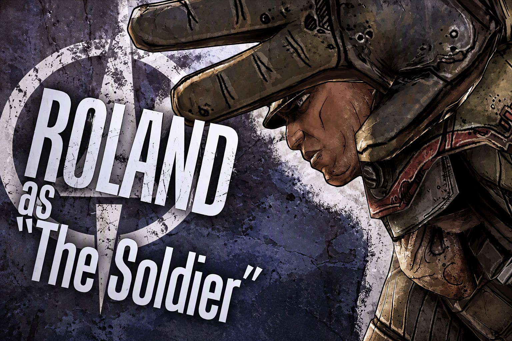
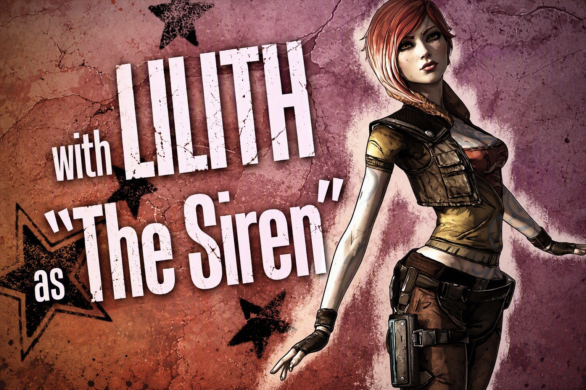
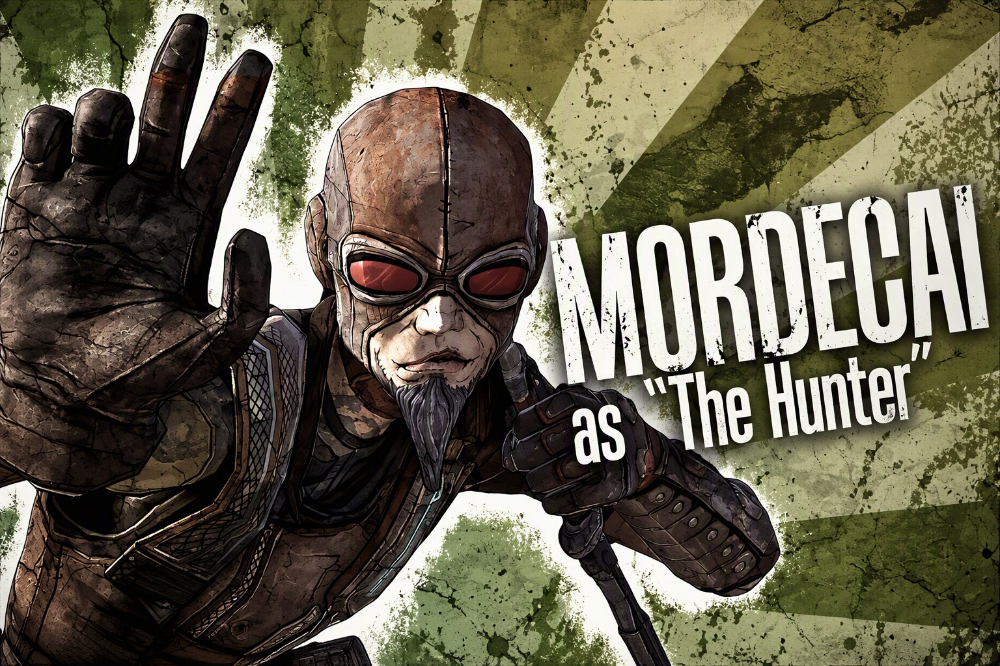
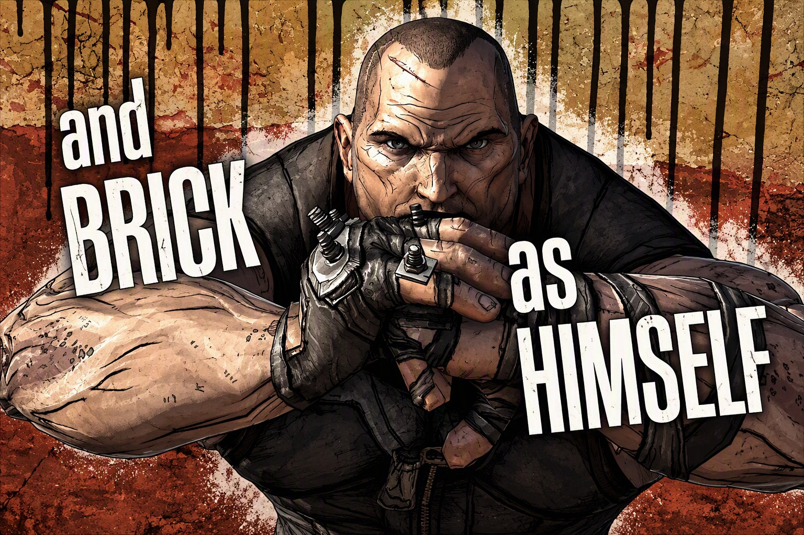

LES CHASSEURS DE L'ARCHE DE BORDERLANDS

ROLAND
Ancien membre hautement qualifié de la Crimson Lance, la force militaire privée de la corporation Atlas, il a été banni de son unité et a rejoint Pandore pour trouver l'Arche et donner un nouveau sens à sa vie.
Roland est un ancien militaire Atlas devenu Chasseur de l'Arche.
Ce soldat fournit du soutien à l'escouade et favorise les armes automatiques.
Sa spécialité : la Tourelle Scorpio !

LILITH
Originaire de la planète Dionysus, elle fait partie d'un groupe très restreint de femmes de la galaxie dotées de pouvoirs surnaturels.
Sa compétence d'action principale est l'Hyperphase (Phasewalk), une aptitude unique qui lui permet de devenir invisible et de se déplacer à très grande vitesse tout en relâchant une puissante onde de choc élémentaire à son entrée et sa sortie de phase.
Sur le terrain, Lilith excelle particulièrement avec les mitraillettes (SMG) et les dégâts élémentaux, notamment le feu et l'acide, ce qui en fait l'un des personnages les plus destructeurs et agiles du jeu !

MORDECAI
Originaire de la planète Artemis, ce tireur d'élite solitaire et cynique est venu sur Pandore pour traquer un homme, tout en cherchant la fortune et la gloire.
Sa compétence d'action principale consiste à envoyer au combat son fidèle compagnon ailé, Bloodwing. Cet oiseau de proie dressé fond sur les ennemis pour leur infliger de lourds dégâts, leur voler de la santé ou de l'argent, et peut cibler plusieurs adversaires à la fois selon ses compétences.
Sur le terrain, Mordecai est le spécialiste absolu des fusils de précision et des revolvers, excellant à éliminer ses cibles à distance critique tout en ignorant les boucliers ennemis grâce à ses compétences de perforation.

BRICK
Un colosse redoutable venu sur Pandore pour retrouver la trace de sa sœur disparue...
Sa compétence unique, la Berzerk, lui permet de ranger ses armes pour massacrer ses ennemis à coups de poing dévastateurs. Pendant ce mode, sa vitesse augmente et sa santé se régénère rapidement. Sur le terrain, Brick est le spécialiste absolu des explosifs (lance-roquettes) et du combat au corps à corps, capable d'encaisser d'immenses dégâts tout en nettoyant des zones entières. Sous ses airs de brute épaisse et ses éclats de rire sadiques en plein combat, il cache une loyauté sans faille pour ses coéquipiers.